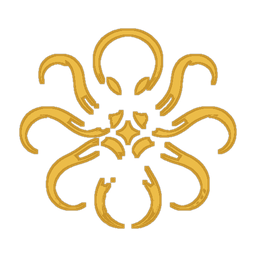

用聊天指揮一整隊 AI 機器人
資料只留在你的電腦
OCTA 讓多個 AI 機器人在你的電腦上幫你查資料、操作網站、整理檔案、定時回報。用的是你自己的 Claude、ChatGPT、Gemini 訂閱或本機模型，不用另外付 API 費用。
Command a team of AI bots from one chat — now 100% on your own computer.
免費 ・ Windows 10 / 11 ・ 安裝後會自動更新
用過雲端版？資料會自動搬回你的電腦
OCTA 已不再提供雲端伺服器，網頁版登入停止服務。只要在曾經登入過的電腦上打開桌面版（更新到 4.0），第一次啟動時就會把你的機器人、對話、例行任務和檔案自動搬到這台電腦，舊資料也會先備份。請盡快打開桌面版完成搬移。
OCTA 能幫你做什麼
用聊天交代工作
每個機器人有自己的任務和記憶。直接傳訊息說要做什麼，它會自己規劃步驟一路做完，再列出需要你決定的事。
群組協作
把機器人拉進同一個群組依序合作，或用 @名字 指定誰做；分區把不同門市或專案分開。
自己的瀏覽器
每個機器人有獨立的內建瀏覽器，登入分開保存。你可以在旁邊即時觀看，需要時一鍵接手幫它登入。
例行任務
每天固定時間或每隔幾分鐘自動執行，也能由外部事件（LINE、表單、Zapier）觸發；結果可送到 Telegram 或 LINE。
先問過你再動手
發訊息、付款這類動作會先擬好等你核准：只這次、一律允許或拒絕，清單上清楚標出待你處理的事。
手機也能指揮
在桌面版打開「手機遠端」，用手機掃 QR 碼、輸入 8 碼配對碼就能連回自己的電腦，不經過任何 OCTA 伺服器。
三步開始
- 安裝一個 AI 工具並登入Claude Code、Codex（ChatGPT）、Antigravity（Gemini），或用 Ollama 跑免費的本機模型。
- 下載並安裝 OCTAWindows 若顯示「已保護您的電腦」，按「其他資訊 → 仍要執行」。
- 建立第一個機器人取個名字、傳一句話交代工作，照「設定指引」選範本試跑。
常見問題
為什麼改成只在電腦上運作？
機器人本來就在你的電腦上工作。資料也留在同一台電腦，速度更快、更穩定，也不用擔心雲端額度或帳號外洩；不再需要註冊或登入。
我以前用網頁版（雲端版），資料怎麼辦？
在曾經登入雲端帳號的那台電腦打開桌面版，更新到 4.0 後第一次啟動就會自動把資料搬過來（搬之前會先備份這台電腦原本的資料）。如果搬移沒有完成，可在設定裡重試。請盡快打開桌面版。
手機還能用嗎？
可以。在桌面版的設定打開「手機遠端」，電腦會開一條只屬於你的加密通道，手機用配對碼連進來，看到的就是電腦上的機器人。
要另外付費嗎？
OCTA 免費。機器人用的是你自己的 AI 訂閱方案（例如 Claude Pro / Max、ChatGPT Plus），或完全免費的本機模型。